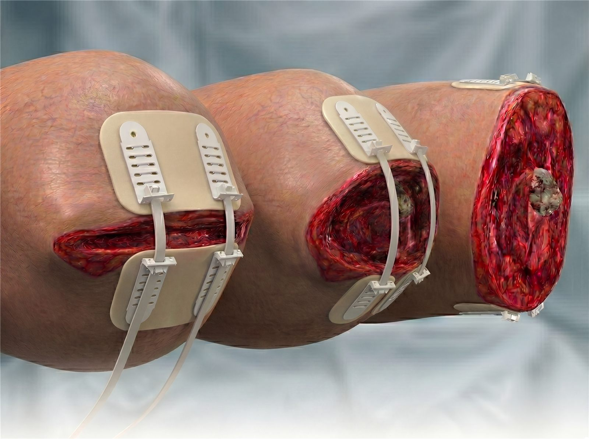
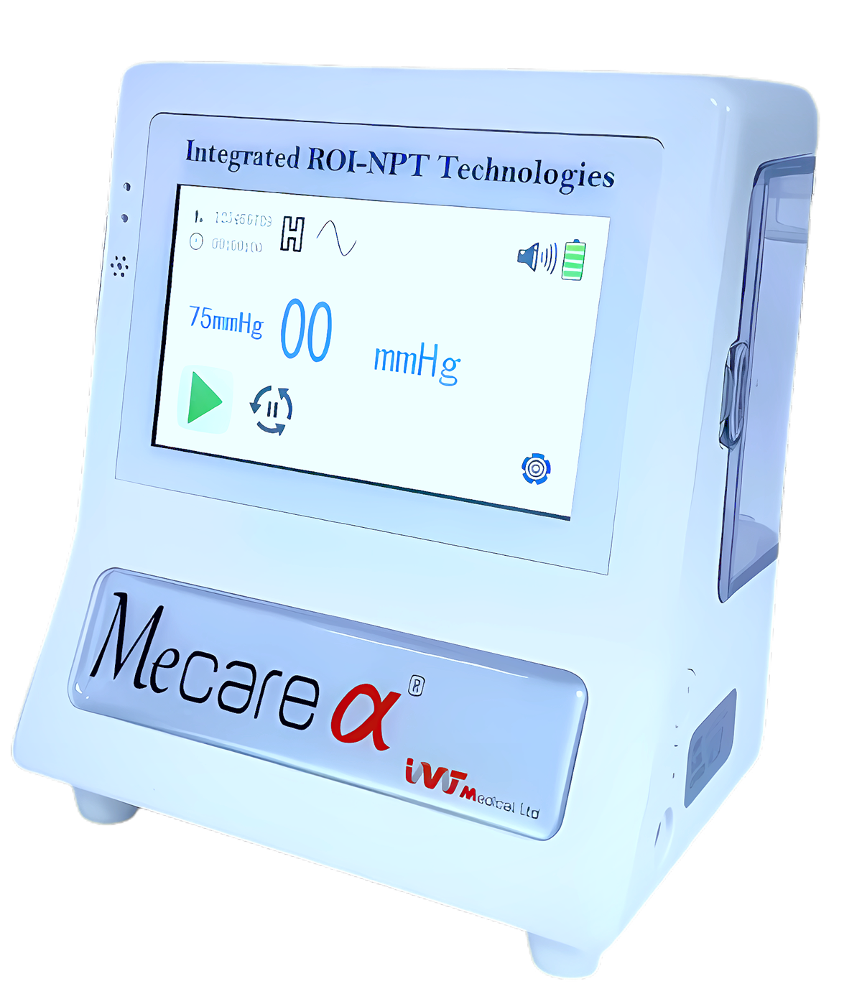

Precision Infection Control & Wound Closure
Redefining the standard of wound care, worldwide.
IVT Medical is a pioneering R&D company advancing medical device technology in wound healing and closure, developing affordable, safe and effective state-of-the-art solutions for surgeons and care teams across the globe.


Vcare α®Regulated NPWT

MeCare α®Portable ROI-NPT
3
Core proprietary technologies
30+
Peer-reviewed publications
15+
Years of clinical research behind CITA
∞
Civil, military & mass-casualty settings